Айдентика построена на приципах переходных состояний. Новичок становится профессионалом, профессионал становится источником знаний для новичка. Но при этом основа у них схожа, что отражают формы в нашем стиле и их динамичные переходы.
Сетка — это такая же динамика развития: начинаясь с узких, переходя в середине в широкие колонки, где пространства много, возвращаясь вновь к маленькими, заменяющим отступы.
Как метафора вечного перехода из одного состояния в другое.


 
